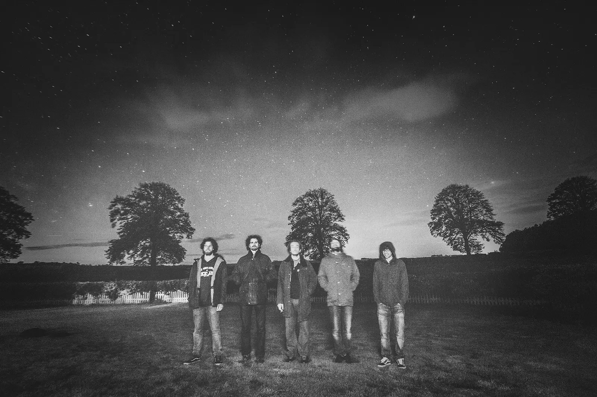
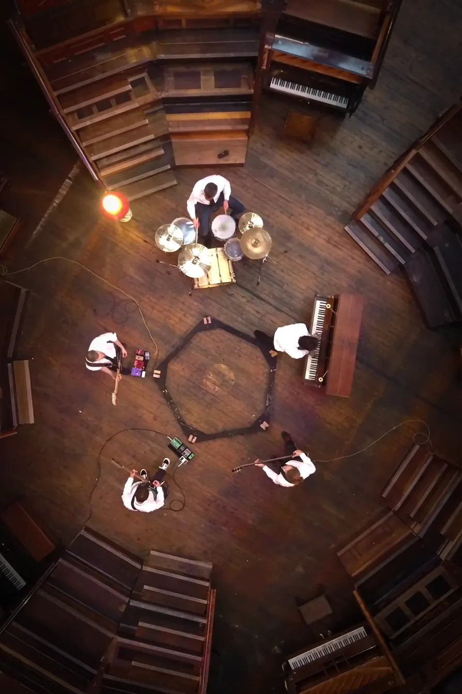

All i see is AN eMptY ciRcle

AisiAec have been playing music together in Edinburgh since 2015.
Often loud, sometimes quiet. Mostly instrumental and usually quite long. Something like progressive post-rock with a sprinkle of psychadelic doom.
It's hard to put The Circle in a box.
Stories
The Skinny: Midnight Rugs (Video Premiere)
...Midnight Rugs, starts off as a beautiful piano lament, lulling you into a false sense of security before it explodes into big guitar licks, fuzzy riffs and pounding drums. With notes of psychedelia and math rock throughout, it strikes a fine balance between soft and hard and is a real ride of a track that's oozing with emotion.
In 2019 we shot a music video for one of our songs, Midnight Rugs. At the time, Edinburgh's Pianodrome project had set up for the first time in Leith Theatre, where Oli and some other friends in Tinderbox had a residency. Coincidentally we also had pals at the Edinburgh Forge where the prototype Pianodrome was built; now a circle of rotting piano corpses after many moons exposed to the elements.
Our music video features both sites, flashing back and forth between them to visually accompany the epic journey of a track that is Midnight Rugs in a hallucinagenic whirlwind.
It's a bit silly but we had a lot of fun making it.
